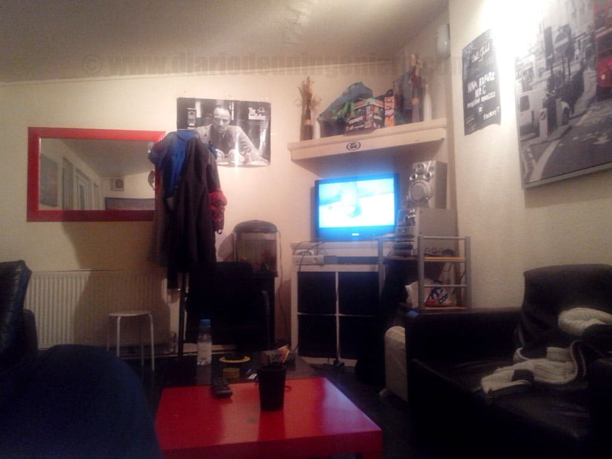
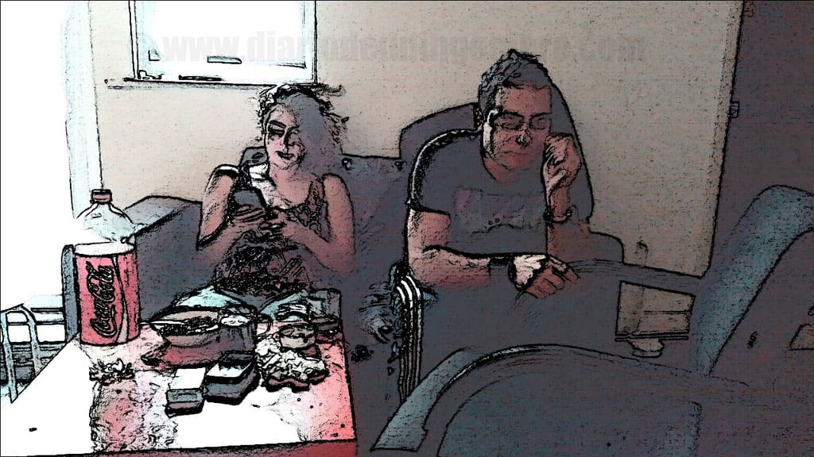

This part is more important even that the selection of the country in terms of the daily life because sometimes changing of neighbourhood sometimes give you the sensation than you are changing to a completely different country.
In France normally difficult neighborhoods are isolated from the rest of the town and if they are in the center of the town are very surveilled as Marseille, but it is necessary look in internet to match this neighborhood with the help of google maps : features of the place, parks, kind of buildings, etc.
Also you should look if there is a lot of traffic or noise and night life around the area, depending of what we are looking for and contrast the opinions with the rest of the neighbours before rent.
Firstly before arrive to the town is find a hostel, to start to find a apartment. For that it must check places in website.
In addition to look the opinnions and choose an option not very expensive because sometimes find the house and flatmates it is not something easy and takes time.
For find the right hostel I recommend the next website:
 it has a lot of valorations than it will help you to choose for one or another place..
You should look the distance to the commercial centers or restaurants and the amount of them.
If there is not a lot and the neighbourhood is a medium profile the prices will be highs because is is not competition in this sector.
Look that next point will be to make a list of apartments to visit and create the corresponding diary.
This diary wont be over hte 6 daily apartments because you could not match correctly.
There are so much details to observe that it will be difficult to memorise.
it has a lot of valorations than it will help you to choose for one or another place..
You should look the distance to the commercial centers or restaurants and the amount of them.
If there is not a lot and the neighbourhood is a medium profile the prices will be highs because is is not competition in this sector.
Look that next point will be to make a list of apartments to visit and create the corresponding diary.
This diary wont be over hte 6 daily apartments because you could not match correctly.
There are so much details to observe that it will be difficult to memorise.

In the case you will try the election of sharing an apartment, than I consider the best option if you are new and alone there because if you rent you should have a compromise with the landlord to stay 6 months at least. Best option is do it with local people of the country than can guide you in a lot of aspects as shopping, find courses or jobs, night parties... Furthermore you will improve the language with less effort. Choose people with a similar profile to us will be also a good option. It could help to find the some things we are looking for and we can live more relaxed and comfortable.
A mixture of nationalities will be better also because you could learn about different points of view and know new cultures. You could expand your mind a lot in different ways and earn experience for all aspects of the life. Even taking the house only as a place to sleep it will affect you and you never will know how much time you will be at the house.
 If you have never shared appartment best option is share with someone of your area or your country who share some common interest with you because even as a sleep area will be something important for be comfortable to affront new goals. You never know how long have you been in the house.However you always could find in other websites than get a phone o contact a person could be for free as www.leboncoin.fr o vivastreet.com


When you are choosing an apartment it is necessary to lok some factors regardless of the area and the price and squaring with price :

For rent aparments the website more important is the next: www.seloger.com//
To fix our camp base we hould have in account distances to :
All this you should be the least committed with the price we are looking for.
Best it is always adjust the price with our research but adding a additional 25% to the maximum price available, because it could be apartment which fill all our requirements and leave our price range.
Sometimes the prices have included a % of negotiation where you could adjust after that in the price range.
By this way if they are expensive and they are there yet it could be because they don't have enough visits and if the room is there a lot of time without be renting the landlord will be more flexible and generous to the time to negotiate.
Normally the landlords exige a deposit than never will exceed the month and half of the price of renting.
With that we should pay the day of enter as maximum twice and half the rent apartment taking in acount the price of the present month.
Most of the countries the landlors are very exigent with that and even if the rules are less kind to the landlord it is something we must take attention if we don´t like to start with problems.
Appearances lie and lot of times so you never get carried away by first feelings about the landlords because starting is always the same and he will seem nice but he could always do something bad in the moment you don't think about and you will pay something you don't have broken.
When you will leave the apartment most of the times the contracts are between equals and nothing is official it should be recommendable speak about that one month before.
Sometimes landlord try to steal at last moment with any excuse. If we don't trust enough we could resist the maximum time without pay to rent the deposit and maybe we dont pay for two weeks until they say to us to left the house.
This way maximum they steal us will be two weeks.
© 2016 - All Rights Reserved - Diseñada por Sergio López Martínez
![[Valid RSS]](https://www.feedvalidator.org/images/valid-rss-rogers.png "Validate my RSS feed")